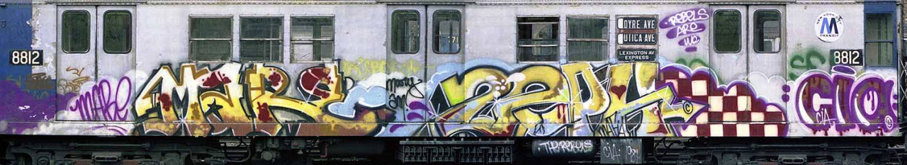
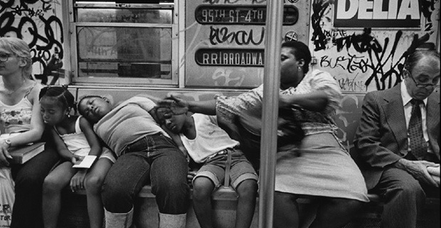
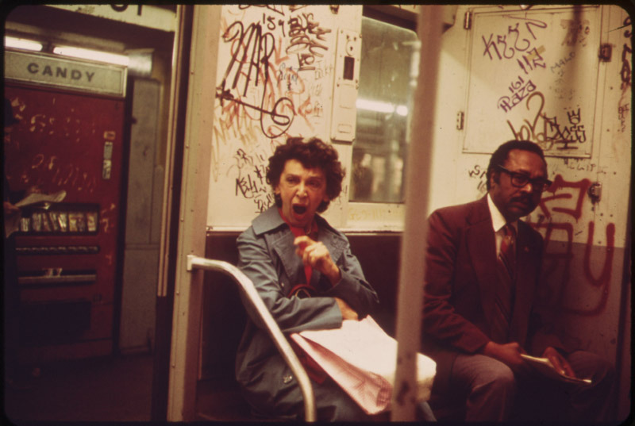
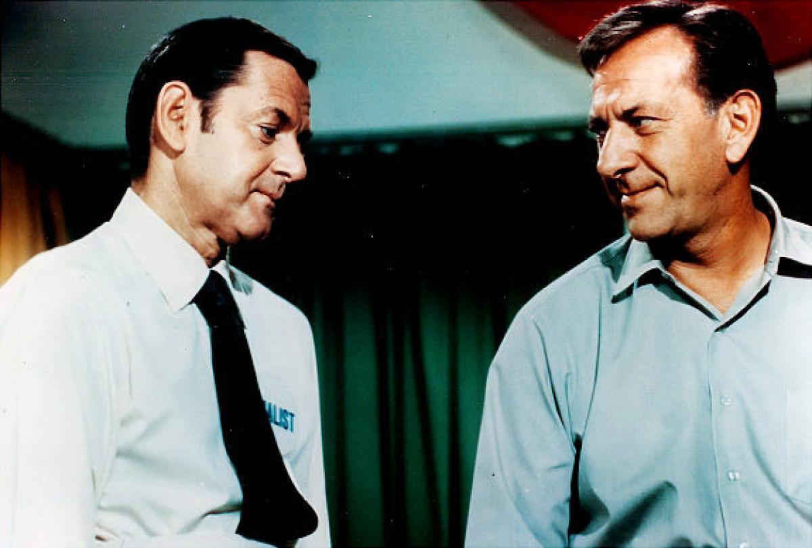
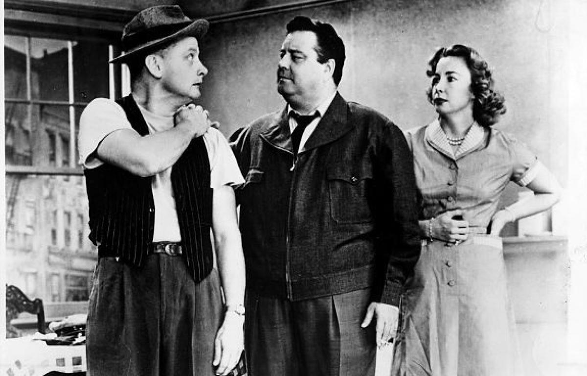
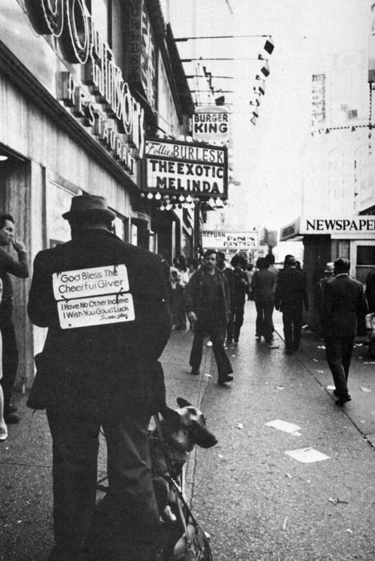

Betty Davis (a musician once married to Miles Davis) smiling, 1974
Betty Davis (a musician once married to Miles Davis) smiling, 1974

Avenue A, 1989.

Zephyr and Mare, 1981, 4 train.

Riding the RR train in the 80s.

This graffiti bores her.
My favorite part of this pic is the candy machine in the background. Why were vending machines so much scarier in the 70s?

Sci-fi makes my butt itch.
NYC, 1986.

WTC and giant monkey.

East 14th St., 1980s.



If you grew up in NYC in the 60s/70s/80s, WPIX (channel 11) was a parent, a teacher, and a warm opiate. Odd Couple at 11; Honeymooners at 11:30.

Neal Slavin / Firemen, New York City Fire Department, 1972
Debbie Harry and Clem Burke of Blondie on 14th Street, 1976
Julie Newmar on her balcony, 1960

Stand clear of the closing doors.
A woman sleeping on the bench, New York, 1960s. Photograph by Tod Papageorge.

Get your checks cashed and grab a cold 7up, 1960s style
A snowy Times Square at the dawn of 1971

Cleaning up after a night of fun at Studio 54, 1970s


NYC BMT 1978
When your boombox is as big as you.

Soda 50¢. 1979.

Futura 2000 on the subway, 1982
East Village View Fruit Exchange, circa 1980.
I wouldn’t want to exchange fruit, but whatever works I guess.


West End Ave, at 79th Street, 1979, facing north.
Disco album in one hand, boombox in the other.
Bus on 66th Street, 1972

NYC skyline, 1981
Downtown, 1981

The IND is Newsbreaker Territory! 1981

The A train, 1976

Free car wash, 1969

Pondering the meaning of it all in Brooklyn Heights, 1972
My fiancé and I are moving to Astoria later this week. Got anything from there?
Just a couple…

Had a request for pics of the upper west side YMCA. Couldn’t find anything more recent than the 1930s, but here are some ancient photos.

Lincoln Towers, 1966
Lincoln Towers, 66th and Amsterdam, 1961
94th and Central Park West, 1980
Do you have anything of the west side Y ?
Ya know, I don’t think so. I’ll look around…

That was a pretty rad bike in 1968!

The great garbage strike of 1981. Broadway and 8th Street.

George and Lennie in Brooklyn, 1976
Psychedelic Burlesk Fun House, 1970s

Protesting Deep Throat, 1970s

Working, Times Square, 1970s

A rare empty Rockefeller Center station during the ‘77 blackout
WTC plaza, 1981

Christopher Street and West Street, 1980.
Steinway Street station, Astoria Queens, 1971
Union Square, 1985